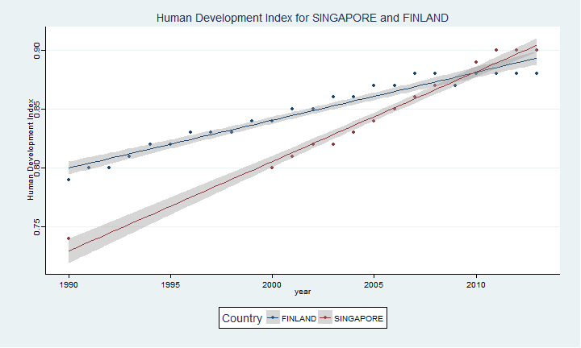

Pearson Education Data (1/5)
In this presentation, you may be directed to move right or downwards.
This app was produced to research 15 years of Educational inputs, outputs and socioeconomic factors.
Luo Kangshun, Andy
Educational Statistician
Education Trends tab (2/5)
In the App,select an Education Indicator from the sidebar as well as Years of Interest in the Education tab. The description is loaded as well as the correlation with time. Press down to see what you can do.

Education Trends tab (3/5)
Select the Education Indicator for comparison.
Select two countries for comparison.
Select the time-frame for comparison.
Examine the data at the sidebar.
Press right to continue.
Snapshot Analysis (4/5)
Select a Year as well as another Indicator to correlate. Drag across groups of points and they display in the area below the chart.
ggplot(data2,aes(y=value.y,x=value.x))+
geom_point()+
geom_smooth(method="lm")+
xlab("Human Development Index")+
ylab("Health Index")+
theme_stata()+scale_colour_stata()+
ggtitle("Health Index against Human Development Index for 2010")

Education Data (5/5)
Select a Country and indicator and the table displays.
data2
## Country Index Year value
## 38226 SINGAPORE Human Development Index 1990 0.74
## 38227 SINGAPORE Human Development Index 1991 NA
## 38228 SINGAPORE Human Development Index 1992 NA
## 38229 SINGAPORE Human Development Index 1993 NA
## 38230 SINGAPORE Human Development Index 1994 NA
## 38231 SINGAPORE Human Development Index 1995 NA
## 38232 SINGAPORE Human Development Index 1996 NA
## 38233 SINGAPORE Human Development Index 1997 NA
## 38234 SINGAPORE Human Development Index 1998 NA
## 38235 SINGAPORE Human Development Index 1999 NA
## 38236 SINGAPORE Human Development Index 2000 0.80
## 38237 SINGAPORE Human Development Index 2001 0.81
## 38238 SINGAPORE Human Development Index 2002 0.82
## 38239 SINGAPORE Human Development Index 2003 0.82
## 38240 SINGAPORE Human Development Index 2004 0.83
## 38241 SINGAPORE Human Development Index 2005 0.84
## 38242 SINGAPORE Human Development Index 2006 0.85
## 38243 SINGAPORE Human Development Index 2007 0.86
## 38244 SINGAPORE Human Development Index 2008 0.87
## 38245 SINGAPORE Human Development Index 2009 0.87
## 38246 SINGAPORE Human Development Index 2010 0.89
## 38247 SINGAPORE Human Development Index 2011 0.90
## 38248 SINGAPORE Human Development Index 2012 0.90
## 38249 SINGAPORE Human Development Index 2013 0.90
## 38250 SINGAPORE Human Development Index 2014 NA